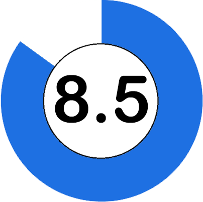

Undertale es un videojuego de rol creado por el desarrollador independiente Toby Fox, en el que se adopta el
control de un niño humano que ha caído en un mundo subterráneo conocido como el subsuelo, una región enorme
aislada debajo de la superficie de la tierra, separada por una barrera mágica.
A opinion propia, sin ser un juego con el presupuesto de un juego de una compañia grande y graficos en 8 bits,
logra dar una excelente experiencia de juego con varios elementos basados en otros RPGs anteriores.
Jugabilidad
Graficos
Sonido

Historia
RankedGames
SO
Procesador
RAM
Graficos
Almacenamiento
Plataformas
Windows XP, Vista, 7
2GHz+
2 GB
Tarjeta grafica con 256 MB VRAM
200 MB
Windows
Xbox One
PS4
Android
Nintendo Switch
MacOS
Assasin's Creed: Unity
Assassin's Creed: Unity es un videojuego de ficción histórica desarrollado por Ubisoft.
Es un juego que es su momento fue muy criticado por sus bugs y fallos en la jugabilidad, pero, esos problemas
ya fueron arreglados, es un juego que merece la pena jugar si eres fan de la saga Assassin's Creed,
Unity te trae a un gran personaje como Arno, los graficos son para envidiar y hicieron un gran trabajo
en su historia ambientada en el año 1788 durante la Revolucion Francesa.
Magnífica recreacion del paris de la época. Artísticamente el juego es sobresaliente.
Una vez parcheado los fallos son asumibles y el argumento es notable.
Jugabilidad
Graficos
Sonido
Historia
RankedGames
SO
Procesador
RAM
Graficos
Almacenamiento
Plataformas
Windows 7, Windows 8/8.1 (64 bits)
Intel Core i5-2500K @ 3.3 GHz
6 GB
NVIDIA GeForce GTX 680 or AMD Radeon HD 7970
50 GB
Windows
Xbox One
PS4
Terraria
Terraria es un videojuego de acción, aventura y de sandbox producido de forma independiente por el estudio
Re-Logic. Tiene características tales como la exploración, la artesanía, la construcción de estructuras
y el combate
Este es sin duda, uno de los juegos mas grandes en cuanto a contenido que he jugado, no esta disponible
solo en PC, sino que es multiplataforma, a priori no sostiene una historia visible a simple vista y parece
solo un RPG de mundo abierto sin objetivo, pero su transfondo está muy relacionada con la mitologia
Lovecraftiana, hay sinfin de criaturas, objetos, armas, jefes, etc. Y en si es bastante enganchador.
Jugabilidad
Graficos
Sonido
Historia
RankedGames
SO
Procesador
RAM
Graficos
Almacenamiento
Plataformas
Windows XP, Vista, 7
Dual Core a 2.5 Ghz
2 GB
Grafica con 256 MB de VRAM
200 MB
Windows
MacOS
GNU/Linux
Android
Xbox One
PS4
Nintendo Switch
The Binding of Isaac
Es un juego del genero roguelike, en el cual Isaac, nuestro personaje va avanzando por mazmorras y
adentrandose cada vez mas en una aventura llena de sangre y gore animado.
A opinion es uno de los mejores juegos que he jugado, no solo es entretenido porque sus escenarios
son totalmente aleatorios, su tematica muy acorde a la ambientacion oscura y pesada, combinada con
el toque caricaturezco y su historia, aunque simple, llena de referencias a la religion y los
transtornos psciologicos.
Jugabilidad
Graficos
Sonido
Historia
RankedGames
Requisitos minimos
SO
Procesador
RAM
Graficos
Almacenamiento
Plataformas
Windows XP, Vista, 7
2.5GHz
1 GB
Compatible con DirectX 9.0c
100 MB
Windows
MacOS
GNU/Linux
Geometry Dash
Geometry Dash es un videojuego de plataformas creado en 2013 por el sueco, Robert Topala y
posteriormente desarrollado por su empresa independiente RobTop Games.
Maneja unos controles extremadamente sencillos ya que solo se maneja con el click del mouse o
touch de la pantalla, se basa unicamente en controlar un cubo saltando por diversos obstaculos y
manejando diferentes vehiculos que poseen jugabilidad distinta y dificultad avanzando
progresivamente.
Posee una comunidad de jugadores que constantemente crean niveles nuevos de todo tipo con el
editor de niveles que incluye el juego que posee funcionalidades como el añadir sencillos bloques
y pinchos, hasta hacer animaciones fluidas, ademas de poseer una gran cantidad de canciones personalizadas para los niveles las cuales estan alojadas en el sitio web Newgrounds.
Como punto a mejorar añado que el juego no se encuentra muy bien optimizado y esto se nota en
bajones de fotogramas por segundo con la menor sobrecarga y la falta constante de actualizaciones
desde el 2017.